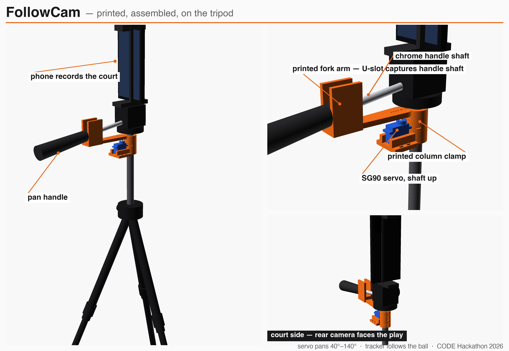

Live demo. A ball crosses the room, the camera follows it.
30 €
the tripod
20 €
the printed robot on it
2000 €
the camera it replaces
Problem
Millions of games are never filmed, never analysed, never scored properly.
01Auto-tracking cameras like Veo or Pixellot cost thousands of euros.
02A human camera operator costs even more, every single game.
03The games with the least support are the ones kids and volunteers run.
Solution
Retrofit the tripod they already own.
01A printed clamp on the pan handle and one hobby servo.
02Their own phone as the camera, our tracking software behind it.
03Ball detection today. Stick-on player tags for any ball and any team next.

Printed, assembled, on the tripod. Servo pans 40 to 140 degrees.
Platform
The camera that follows the ball is the camera that keeps the stats.
01300 frames of a real Landesliga game auto-labeled with Grounding DINO, 3395 boxes, no human drew a box. Plus 120 ball frames the coach labeled on the laptop.
02YOLO11n fine-tuned in 25 minutes on a laptop: players 0.96, hoop 0.97 mAP50. Ball fine-tune on the coach's labels: false balls 36 to 8 in 40 held-out frames, recall 43 to 53 percent. Every filmed game adds data.
03ByteTrack keeps ids, teams by jersey colour, jersey numbers merged into player identities.
04Feet projected onto a 2D court, minimap next to the video.
05Shot events from ball and hoop geometry, FGA, FGM, FG% per player. 24 attempts, 10 made in 10 minutes. Checked by a human: 96 percent of detected attempts are real shots, made or missed right in 73 percent, shooter's team right in 77 percent. The coach confirms or corrects with one tap.
06Live mode at about 10 fps from the phone: running score, auto plus two with human veto, RTMP out.
The rig on the tripod, then the analytics: tracking overlay and 2D minimap, one MacBook.
Broadcast
Names, numbers and live score on the video.
Coaches
Shot charts, movement, possession.
Scorekeeping
Auto with veto for volunteer leagues.
Why us
Designed, printed, wired and demoed in one day at CODE.
Next: film a real game this semester. Every game the rig films adds labeled frames.